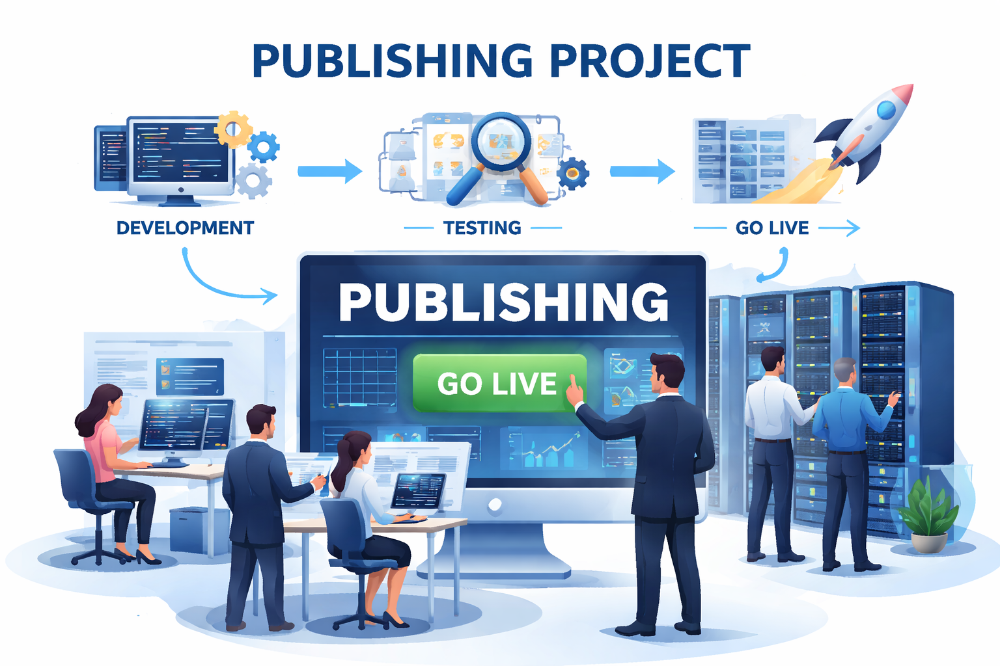

Publishing
A system for managing a school that handles student-related operations.

Things I do in Project
TRC Publishing( September 1 2025 - March 31 2026)
- Analyze C script and convert it into JAVA using AI
- Integrate Spring Boot MVC with error catcher .
- Check for Bug using Junit testing based on document provided
East Publishing (January 1 2025 - March 31 2025)
- Create Mock HTML based on Documents that the client provide
Publishing( September 2023 – December 2023 )
- Build project UI mockups using clients provide documents
- Migrate Oracle SQL to Postgres SQL
Tech
PostgreSQL, OracleSQL, Ora2Pg, Agile Development, Junit, Microsoft Copilot, ChatAI,HTML,CSS ,Javascript